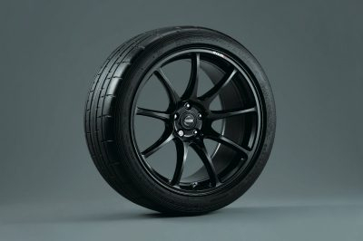

Rodas RAYS® de 20” em alumínio forjado
Conectando a energia ao solo, o GT-R NISMO possui uma roda RAYS® de 20” em alumínio forjado. [*]
A redução no peso permite que a suspensão reaja mais rapidamente às ações do motorista ou às condições da estrada, enquanto o design aberto melhora o resfriamento dos componentes do freio. Parceiros perfeitos, os pneus foram projetados usando análise de supercomputador. O resultado é uma área de contato mais ampla, maior aderência nas curvas e menor resistência ao rolamento. Gerando benefícios em todas as áreas.